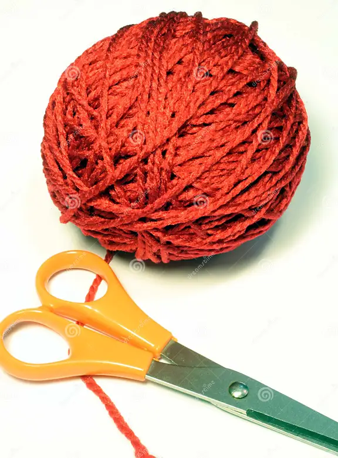

Crochet is a versatile craft that involves creating fabric by interlocking loops of yarn or thread with a crochet hook. It is popular because of its flexibility and the fact that it requires minimal equipment to get started. You can create a wide variety of items using crochet, from clothing and accessories to home décor and more. Here's a basic guide on how to get started with crochet:
1.Yarn: Yarn comes in a variety of weights, materials, and colors. For beginners, it's advisable to start with a medium weight yarn as it is easier to work with.

2.Crochet Hook: Choose a hook size that matches the yarn weight you're using. For beginners, a size H (5.0 mm) or I (5.5 mm) hook is often recommended.

3.Scissors: You'll need a good pair of scissors to cut the yarn.
4.Yarn Needle: This is used for weaving in ends once you've finished your crochet project.

(1).Chain Stitch: This is the most basic stitch in crochet and it forms the foundation of most patterns.

(2).Single Crochet: This is the simplest form of basic crochet stitches, it provides a tight, dense fabric

(3).Double Crochet: This is a taller stitch than single crochet and it is used in a wide variety of patterns

- Create a slipknot: This is the initial loop you will put on your hook.
- Start Crocheting a Chain: This serves as the foundation row. The length of the chain will depend on the project you're working on.
- Turn and Start Second Row: Once your chain is long enough, you will turn your work and start crocheting into the stiches of the chain.
- Continue with patterns: Follow your pattern, continue making stitches in each new row .
- Finish the project: When your project is the right size, cut the yarn leaving a tail. Yarn over and pull through the loop on your hook to secure it.
- Weave in Ends: Use your yarn needle to weave in any loose ends.
Remember, learning to crochet requires patience. Start with simpler projects like scarves or dishcloths before moving on to more complex items like hats or blankets. Once you get the hang of the basic stitches, you'll be able to tackle almost any pattern. Enjoy the process and happy crocheting!
contact